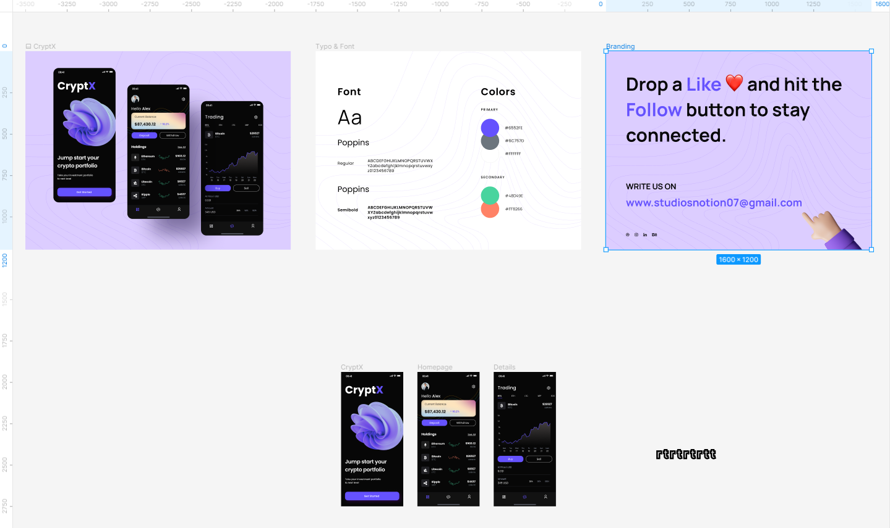

arrow_circle_up
Alapvető dolgok:
-
Tervezőlap (draft): az a
felület, ahol a megvalósítjuk az elképzeléseket.
-
Az
eszköztár (toolbar) baloldalán
található ikonok tartalma. Leszámítva a szövegmezőt (T), a
merevítőt (kéz) és a megjegyzést(gondolatbuborék).
-
szövegmező: szöveg
elhelyezése az oldalon.
-
merevítő: az oldal
tartalmát megmerevítve lehetővé teszi az együtt
mozgatást.
-
megjegyzés: megjegyzések
elhelyezése az oldalon.
- Példa egy kommentre.
-
Középen található a Tervezet neve (
Gyakorlás a Figma felületén ) és a Projekt (Drafts), amibe
elmenti a Figma. Látható, hogy mind a kettő
megváltoztatható.
-
Jobboldalon található
- a szerkesztő(k) neve
-
a megosztás (Share)
gombja
-
a
Dev Mode/ Desing Mode
közötti váltógomb
- az előnézeti gomb
- a méretváltoztatás gombja
-
A baloldali
rétegek tábla (Layers Pane)
tartalmazza a tervezetben szereplő összes elemet. Az
Eszközök (Assets) fülön a
felhasznált komponensek szerepelnek leginkább.
-
A jobboldali
tervezés tábla (Design Pane)
tartalmazza a tervezetben szereplő összes elem részletes
tulajdonságait.
-
A
középső vásznon (Canvas) zajlik
a tényleges munka.

-
Jól látható a vonalzó a széleken, amely a pontos
pozícionálást segíti. Ez a következő helyen állítható be.
-
Az elemek együttmozgatásához (merevítés) használható még a
space + egér balgomb kombináció
is.
-
Az elemek méretezéséhez használható még a
ctrl + egér kerékgörgető
kombináció is.
Források:
Figma
Wikipedia